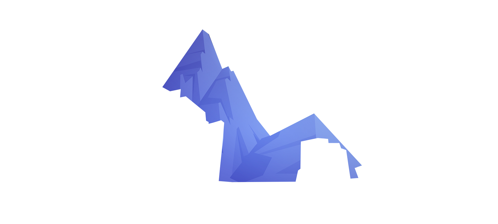
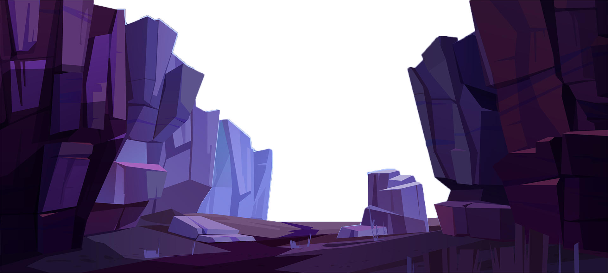

League of Legends je týmová strategická hra,
ve které dvě pětičlenná družstva mocných šampionů bojují o to,
kdo jako první zničí nepřátelskou základnu. Vyber si z více než 140 šampionů,
prováděj dechberoucí akce, sbírej zářezy, srovnávej věže se zemí a vybojuj si vítězství.
Nexus je srdcem základen obou týmů. Zvítězíš, když tvůj tým dokáže zničit nepřátelský nexus jako první.
Aby se tvůj tým dostal k nepřátelskému nexusu, musí pročistit alespoň jednu lajnu.
Cestu ti blokují obranné budovy – věže a inhibitory.
V každé lajně se nacházejí tři věže a jeden inhibitor, samotný nexus pak chrání dvojice věží.
Síla šampionů se zvyšuje získáváním zkušeností, které slouží k postupu na vyšší úrovně, a zlaťáků,
za něž si můžeš v průběhu zápasu pořizovat mocnější předměty.
Soustředit se na tyto dva klíčové faktory je nezbytné pro přemožení nepřátelského týmu a zničení jeho základny.
Šampioni mají pět základních schopností, dvě speciální kouzla a až sedm předmětů zároveň.
Nalezení optimálního pořadí schopností, vyvolávačových kouzel a kombinace předmětů pro tvého šampiona dopomůže tvému týmu k úspěchu.